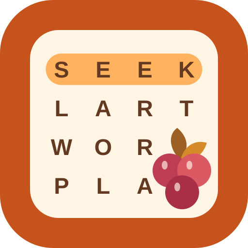

Seekberry
Find your next favorite word.
Word-search puzzles for Android, iPhone, and iPad. The first collection contains 50 Bible-themed puzzles. Paid download, with no ads, subscriptions, or in-app purchases in the current version.
The app is in development. Store download links will be added after release.
Published by Justin Von Braun
theonetheonlyvonbraun@gmail.com